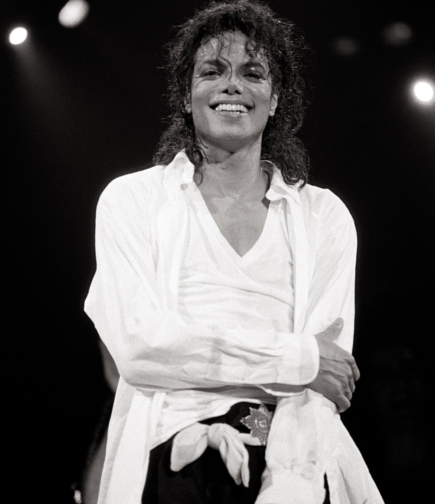

¿Quién fue Michael Jackson?
Michael Joseph Jackson (29 de agosto de 1958 - 25 de junio de 2009) fue un cantante, compositor, y bailarín estadounidense, considerado una de las figuras más influyentes de la música y la cultura popular del siglo XX. Apodado el "Rey del Pop", su carrera abarcó más de cuatro décadas, durante las cuales dejó un legado inmenso de música innovadora y éxitos globales.
Logros importantes
- Revolucionó la industria musical con álbumes icónicos como "Thriller", el álbum más vendido de todos los tiempos.
- Popularizó el icónico "Moonwalk", un paso de baile que se convirtió en su firma.
- Ganó 13 premios Grammy y numerosos otros galardones a lo largo de su carrera.
- Fue un defensor de los derechos humanos y la ayuda humanitaria, donando millones a diversas causas.
Su legado
El legado de Michael Jackson va más allá de la música. Su influencia en el pop, el dance, y el entretenimiento continúa siendo palpable en muchos artistas contemporáneos. Su estilo único y su visión creativa dejaron una marca imborrable en la historia.